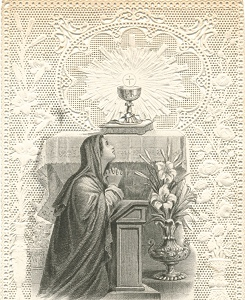

Sacred Texts Christianity
|  | The Ordinary of the Mass(Latin/English)[1921] |
This is the liturgy known as the Ordinary of the Mass, derived from a Missal with an imprimatur date of 1921. It is an example of the Tridentine Mass, a traditional form used for about four centuries until the mid-20th century by the Roman Catholic Church. It includes both the Latin text, which was used during the ceremony, and an English translation from the same edition, presented in parallel. The Vatican decided to revise the liturgy in the 1960s, moving toward using vernacular languages instead of Latin in their rituals, so this text will be primarily of historical or nostalgic interest. It is also useful for traditionalist Catholics who want a baseline reading.
Keep in mind that this is only the core text of the Latin Mass; a standard Missal is sort of a construction kit for Masses. So it would be inaccurate to say that this is 'The' Latin Mass. This text occupies only ten pages out of fifteen hundred in the Missal it was transcribed from. On any given day, there could be a special reading for the Saint of that day, as well as a sermon based on a scripture passage, plus other components, including portions only celebrated by priests in the absence of the congregation. There are also special Masses and additional prayers for funerals, dedicating a Church, the election of a Pope, and other extraordinary events.